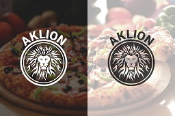
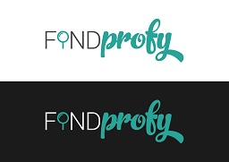

Aklion
Лого:

Описание:
Доставка пиццы, суши, ролл. Суммарно команда состояла из разработчика, верстальщика, дизайнера, SMM-щика, управляющего. Время от времени на смене было 2-3 курьера. Проработали год с лишним. Был разработан сайт на Wordpress + WooCommerce, CRM-система на C# + JavaScript. Активно велась разработка новой версии CRM-системы, расчитанной на масштабирование сети. Но увы, не прожили...
Команда разработки:
- Разработчик
- Верстальщик
Роли:
- 01.09.2016 - 01.12.2017: Разработчик (Full stack + Android)
Обязанности:
- Разработка интернет магазина
- Разработка CRM системы
- Разработка модуля приема заказов
- Разработка модуля расчета параметров доставки
- Разработка Android приложения приема заказов
- Взаимодействие с членами команды
Методологии:
- Agile
Findprofy
Лого:

Описание:
Сервис был предназначен для соединения исполнителя работы с заказчиком. Команда состояла из двух разработчиков, дизайнера, рекламщика. Приложение было написано на Ruby на фреймворке RoR. На фронте - JavaScript/CoffeeScript. Провалились
Команда разработки:
- 2 разработчика
Роли в команде:
- 15.08.2016 - 15.12.2016: Разработчик (Full stack)
Обязанности:
- Разработка Backend + Frontend
- DB administration
- Модерирование заявок
- Взаимодействие с членами команды
IRemote
Описание:
Приложение + устройство, предназначенное для посылания сигналов через ИК-передатчик на устройства, принимающие ИК-сигнал. Команда состояла из 5 универсалов. Стек технологий: приложение - Java + Android SDK + Android NDK, сервис-справочника - PHP, устройство - Multisim + Altium Designer + Компас-3D. Вышли на краудфандинг, не собрали нужную сумму.
Команда разработки:
- 5 разработчиков-универсалов
Роли:
- 10.08.2014 - 01.07.2015: Разработчик мобильного приложения
- 10.08.2014 - 01.07.2015: Проектировщик устройства
Обязанности:
- Разработка Android приложения
- Проектирование схемы устройства
- Сборка образцов
- Проектирование корпуса устройства
- Взаимодействие с членами команды
Ссылки:
СМИ:
Crm
Описание:
Пока без информации про возможности ситемы. В команде 2 разработчкика, дизайнер, рекламщик. Стек технологий: С#, TypeScript, Docker, K8s, Postgres. Ведется активная разработка.
Команда разработки:
- 2 разработчика
Роли:
- 28.04.2019 - настоящее время: Разработчик (Full stack)
Обязанности:
- Разработка CRM системы
- Взаимодействие с членами команды
Методологии:
- Agile